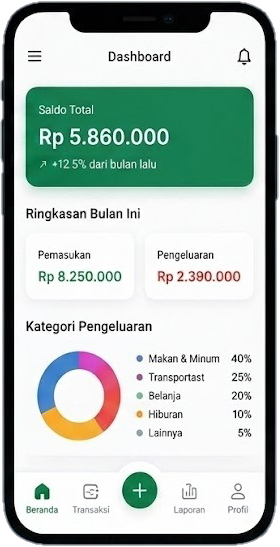

Kelola Keuangan dengan Cerdas
Pantau, Catat, dan Kelola Keuanganmu dengan Mudah
Money Tracker membantu kamu mengatur pemasukan, pengeluaran, dan mencapai tujuan finansial dengan lebih baik.

Pantau Keuangan
Lihat ringkasan pemasukan dan pengeluaran secara real-time.
Catat Transaksi
Catat setiap transaksi dengan mudah dan cepat.
Capai Tujuan
Buat tujuan keuangan dan capai impianmu selangkah demi selangkah.
Tentang Money Tracker
Deskripsi
Money Tracker adalah website untuk membantu pengguna mencatat, memantau, dan mengelola keuangan pribadi dengan lebih mudah.
Tujuan
Membantu pengguna mengontrol pengeluaran, meningkatkan kebiasaan menabung, dan mencapai tujuan finansial.
Manfaat
Pengguna dapat mengetahui arus keuangan, menghemat pengeluaran, dan membuat keputusan finansial yang lebih baik.
Tim Kami
Meyla Kusuma Firdaus
13182420142
Frontend DeveloperIvan Hazim Al-Aziz
13182420150
UI/UX DesignerArdiansyah Sisworo P
13182420152
Backend DevelopmerAang Abdul Rahman
13182420181
Backend Developer